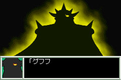
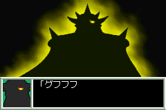

Kinniku Banzuke - Kongou-kun no Daibouken! (Japan)
SRAM 256K Save Format Spec gbakit Built-In 🎮 Button Cheat 💾 MultiBoot 🎮 4P Link 🔌 Mobile Adapter GB (CGB-005)
Cartridge Identity
- Game Code
AK4J(FamilyAK4)- Header Title
KINNIKU AGB- Maker / Revision
A4/ rev0- ROM Size
- 8.0 MiB (8,388,608 B)
- Save Media
SRAM 256K- SHA-256
d8f552707b384c8b4bd372a234f2d56949fdf96341d2bd17d145aed902a5ebb2- Engine / SDK Group
comm-002(145 families)
Screenshots


Verified Button-Combo Cheat
Zero-patch retail controller cheat (Wave 3): 4-way counterfactually verified in headless
libmgba. See all verified titles in the Button-Combo Cheats Catalog.
- Effect
- Hidden Controller Sequence Unlock (ROM table 0x08062f34)
- Button Sequence
A, B, SELECT, START, B, SELECT, START, RIGHT, SELECT, START, RIGHT, LEFT, START, RIGHT, LEFT, UP- Verification Verdict
- Visual + RAM Unique Reaction
- Target RAM Address
0x03000610- ROM Table Address
0x08062f34- Timing Protocol
boot=360f,hold=6f,release=6f,settle=60f- Activation Indicator
- Headless libmgba 4-way counterfactual verified: unique 240x160 framebuffer and RAM/VRAM state transition distinct from control, wrong, and reversed inputs
gbakit cheat verify AK4JNiche & Rare Accessories
Detected niche/rare GBA accessory support: 🔌 Mobile Adapter GB (CGB-005).
Full 343-ROM corpus breakdown in the Cartridge Hardware & Niche Accessories Reference · auto-detected from ROM bytes via
gbakit inspect.
- Mobile Adapter GB (CGB-005)
- Mobile System GB HTTP/1.0 + SMTP/POP3 stack
Link Cable & Multiplayer Communications
This title contains detected communication capabilities: 💾 MultiBoot 🎮 4P Link.
Detailed protocol specifications, SIO registers, Joybus commands, and MultiBoot sequences are documented in the Link & Multiplayer Reference.
- Multi-Player SIO (4P)
- 16-bit ring network · SIOCNT (
0x04000128) literals:0x008498,0x008500,0x008a00· SIODATA32/SIOMULTI0 (0x04000120) literals:0x0095d0,0x05176c,0x053898 - Single-Cart MultiBoot
- Single-Cartridge MultiBoot (Download Play) client/server handler · Thumb SWI 0x25 (
0xDF25):0x088912,0x156814,0x21a66e,0x21e062
Battery Save Format Specification
Open Full Save Format SpecDownload save-format.json
- Specification Coverage
- 4 mapped fields · 0 verified checksum(s) · Confidence: HIGH
- gbakit Built-In Support
- Built-in (AK4J)
gbakit save verify AK4J save.sav
gbakit save decode AK4J save.sav
gbakit save fix AK4J damaged.sav -o repaired.savObserved Battery Save Layout
- Fill Byte & Active Size
0x00fill · 16–16 / 32,768 B active (entropy 3.38 bits/B)- Active Offset Ranges
0x0–0xF(1 total)- ASCII Magic / Headers
INITIALIZED0516A- Observed Variable Regions
- 0 bytes across 0 spans: None
- Candidate Checksum/Counter Spans
- None
ROM Assets, Compression & Audio
- BIOS Compression
- LZ77 (
0x10): 0 streams · RLE (0x30): 0 streams - ROM Pointer Tables
- 249 tables (0 pointing to validated compressed streams)
- SDK Backup Tags
SRAM_V112
Asset Map (formatkit.asset-map.v1)
Download AK4J-r0-d8f552707b384c8b.asset-map.json.gz (206,460 B (201.6 KiB)) Verified PASS · 15.82% coverage
| Metric | Bytes / Value | Entries |
|---|---|---|
| Identified | 178,418 B (174.2 KiB) (2.13%) | 1,826 |
| Mapped | 0 B (0.00%) | 0 |
| Opaque | 1,148,976 B (1.10 MiB) (13.70%) | 1 |
| Unknown | 7,061,214 B (6.73 MiB) (84.18%) | 1,748 |
| Total ROM Size | 8,388,608 B (8.00 MiB) | 3,575 |
| Coverage % | 15.82% | — |
| Entries w/ Code Refs | 1,937 / 3,575 (54.18%) | — |
Top Identified Formats: gfx.gba-palette (1,820 · 164,800 B (160.9 KiB)) · compress.bios-huffman (4 · 12,090 B (11.8 KiB)) · audio.m4a-song-table (1 · 1,336 B (1.3 KiB)) · gba.rom-header (1 · 192 B)
Largest unknown Extents (Headerless / Custom Asset Candidates)
| Offset | Size | Shannon Entropy | Code Refs |
|---|---|---|---|
0x00631828 | 740,564 B (723.2 KiB) | 6.771 bits/B | 0 |
0x00591094 | 289,644 B (282.9 KiB) | 6.427 bits/B | 0 |
0x00180F30 | 270,800 B (264.5 KiB) | 5.766 bits/B | 0 |
0x0014702C | 237,284 B (231.7 KiB) | 6.292 bits/B | 0 |
0x0053663C | 165,184 B (161.3 KiB) | 6.705 bits/B | 0 |
gzip -dk AK4J-r0-d8f552707b384c8b.asset-map.json.gz && gbakit map verify rom.gba AK4J-r0-d8f552707b384c8b.asset-map.json
gbakit assets export rom.gba --asset-map AK4J-r0-d8f552707b384c8b.asset-map.json -o out/Text, Fonts & Scene Data
- Primary Text Encoding
- Shift-JIS (uncompressed) (
6ASCII strings ·200Shift-JIS runs) - Font & VWF Indicators
- VWF Width Table 1bpp Font · BIOS SWIs: BitUnPack
0x10:10· LZ770x11/12:14· Huffman0x13:7· RLE0x14/15:2 - Scene & Packaging
52ROM pointer tables (≥32 entries,4≥200) ·7relativeu32TOCs ·181OAM metasprite hits
Password System
- Save Media
- Battery-Backed (SRAM)
- Password Class
- Password UI Strings Detected (
password_ui_strings_only)
Hardware MMIO Subsystems
ppu_display0x80012b4,0x80029bc,0x80030dc,0x8003cd0,0x8003d3c,0x8004044,0x80048c8,0x8005744,0x800c4b8,0x80136ec(+4 more)save_bus_sram_flash0x8014c20,0x8014c68